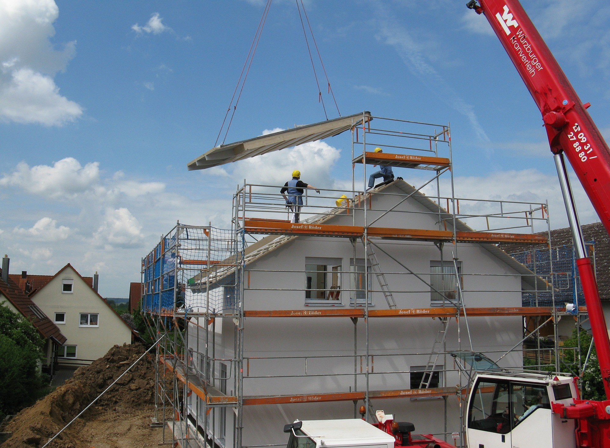
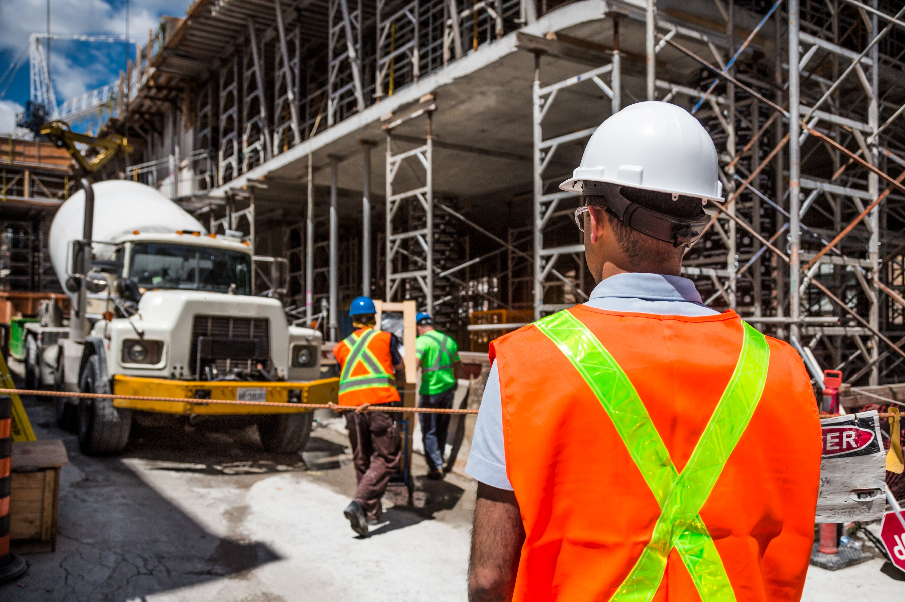

HM Building.cz s.r.o liberecká stavební společnost
Využijte škálu našich služeb
Ačkoliv provádíme především průmyslové stavby, není pro nás problém postavit Vám rodinný domek na klíč, nebo jen hrubou stavbu. Nejsou nám cizí ani rekonstrukce budov a jejich údržba a to včetně okolních ploch.

Novostavby
Dle požadavků investora jsme schopní dodat kompletní stavbu na klíč, případně zhotovit ucelenou část. Jsme schopni zajistit také projektovou dokumentaci. Provádíme stavby jak průmyslového typu, tak rodinné stavby.

Průmyslové stavby
Realizujeme průmyslové objekty ocelové konstrukce, lehké ocelové (stanového typu), z prefabrikovaných dílců atd. Vzhledem k tomu, že vlastníme dostatek vlastní mechanizace, stáváme se nezávislými na ostatních subdodávkách a tím se dostáváme na přijatelné ceny.
Rekonstrukce domů a jiných staveb
Provádíme veškeré práce spojené s rekonstrukcí stávajících objektů. Pro naše klienty zajišťujeme dodatečné izolování objektů, zateplení objektů, změnu vnitřních i vnějších dispozic stávajících objektů a demolice stávajících staveb.

Komunikace a zpevněné plochy
Komunikace a zpevněné plochy provádíme včetně zemních prací, konstrukcí podkladních a souvisejících objektů, jako jsou odvodnění, zpevnění svahů, opěrné zdi atd.
Rádi vám ukážeme
naše reference
Stojí za námi kvalitně vyhotovené zakázky dle konkrétních požadavků zadavatelů podepřené letitými zkušenostmi ve stavebnictví. To, že obrátit se na právě nás je vhodná volba potvrdí naši klienti, na jejichž stavbách jsme zanechali náš rukopis. Reference jsou jen zlomkem naší práce, za kterou se rozhodně nestydíme.

Hasičská zbrojnice
celková rekonstrukce

Samoobslužná prádelna
stavební opravy

Venkovní plochy Restyl
provedení venkovních ploch